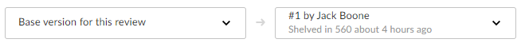

Review display
The new Swarm review page is now available as a preview. The new Swarm review page is described in this documentation.
By default, Swarm opens the original review page when you first start Swarm 2022.1. To access the review page preview, use the Preview toggle switch at the top of the review page. You can switch back to the original review page whenever you want to.
The new review page will replace the original page in a later Swarm release. The new page is currently missing a few features, but they will be added in a later release. If you need to use one of the missing features, switch back to the original Swarm page.
Help for the original Swarm review page is available in the Swarm 2021.2 documentation, see Review display.
Please share your feedback with us if there is anything you miss from the original review page. For contact details, see Getting help
During a code review, reviewers spend most of their time using the review interface.

Swarm supports stream specs in your workspace using the Private editing of streams feature. If a changelist or review contains a stream spec, it will be displayed first in Files with the prefix stream: //, for example: stream://MyStreamDepotName/MyStreamSpecLocationName. A changelist/review can only contain one stream spec.
The review interface is very similar to the changelist interface; and provides largely the same functionality, but has several notable differences that are described in the following sections.
Jump directly to a specific area of the review page using the following links:
Review summary
The Review ID is displayed at the top of the review page. A summary of the review is displayed below the review ID, and contains:
- Review author avatar and name: The avatar and name of the review author. Hover over the avatar to see the name of the review author and hover over the name to see the ID of the review author. Click on the avatar or name to go to the profile of the review author, see Viewing another user's profile.
- Review type: Displays the review type, reviews can be pre-commit or post-commit.
- Review ID: The unique number used to identify the Swarm review.
- Review raised: When the review was requested.
- Version: The version of the review being viewed and the total number of review versions.
- Project branch: The project branch the review files are in, click to go to the project page.
- Last updated: When the review was last updated.
Review state
The state of the review is displayed in the review description header. A review can be in one of the following states:
- Needs review: The review has started and the changes need to be reviewed.
- Needs revision: The changes have been reviewed and the reviewer has indicated that further revisions are required.
- Approved: The review has been approved. The changes may need to be committed.
- Rejected: The review has been completed. The changes are undesirable and should not be committed.
- Archived: The review has been completed for now but it is not rejected, or approved. The review has been filed away in case it is needed in the future.
For information about review states, see States.
Vote buttons
The vote buttons are in the review description header. Click a vote button to vote the review up or down. If you have already voted on the review, the vote button you clicked is highlighted. Clicking the button again, clears your vote. If you are not a member of a review, voting on the review adds you as a reviewer.
Stale votes
When a review is updated, if the review's list of files, file content, or file-types changes, any votes cast on the review become stale. The vote counts are reset, and the vote indicators become muted.
If you hover your mouse over a reviewer with a stale vote, a tooltip appears displaying the userid, how they voted, and on which version of the review; each version is represented as a point on the Select review versions to view.
Stale vote handling is not supported for Git-created reviews.
Change state button
The Change state button is also used to change the state of the review. Click to select a new state from the dropdown menu. State change options are only displayed if you are authorized to make the state change:
- Needs revision: Select to request changes to the files in the review.
- Needs review: Select to request further review of the changes.
- Approved (only available if the voting requirements for the review are satisfied. For information on voting requirements, see Required reviewers): select to approve the review.
- Committed (only available for pre-commit reviews that have been approved): Select to commit the review.
- Approve and commit (only available for unapproved pre-commit reviews when the voting requirements for the review are satisfied. For information on voting requirements, see Required reviewers.): Select to approve and commit the review in a single step, see Approve and commit.
- Rejected: Select to reject the review.
- Archived: Select to archive the review.
For information about changing the state of a review, see States.
Review actions button
The Review actions  button gives you access to mote actions you can perform on the review. Not all of these actions are available to you, the actions available to you depend on your role on the review, the review type, and what is enabled on your Swarm system:
button gives you access to mote actions you can perform on the review. Not all of these actions are available to you, the actions available to you depend on your role on the review, the review type, and what is enabled on your Swarm system:
Add change
Once a review has been started you can add a changelist to the review. It can be useful to add changelists to an existing review. For example, if follow up changes are made to files in a review or if you need to group a number of changelists under a single review.
The Add change option in the Review actions button is used to add a changelist to an existing review. The option is not available if the review is in a state that is protected from change by the review workflow rules. For details of the On update of a review in an end state rule, see Workflow rules.
You can also add a changelist to a review directly from the changelist description, see Review creation and modification outside of Swarm.
The options available for the Add change option depend on whether the review is pre-commit or post-commit:
- Pre-commit reviews:
- Append pending changelist: when you add a pending changelist to a review, the files in the changelist are appended to the existing files in the review, see Append a pending changelist to a review.
- Replace with pending changelist: when you add a pending changelist to a review, all of the files in the review are replaced with the files in the changelist you are adding to the review, see Replace review with a pending changelist.
- Replace with committed changelist: when you add a committed changelist to a review, all of the files in the review are replaced with the files in the changelist you are adding to the review, see Replace review with a committed changelist.
NoteA review can only contain 1 stream spec. If you append a changelist with a stream spec to a review that already contains a stream spec, the spec in the changelist replaces the original one in the review. If it is a different spec from the original spec in the review, Swarm cannot display the diff between them and displays File content unchanged.
NoteIf you replace a pre-commit review with a committed changelist, the new version of the review will be a post-commit review.
- Post-commit reviews:
- Replace with pending changelist: when you add a pending changelist to a review, all of the files in the review are replaced with the files in the changelist you are adding to the review, see Replace review with a pending changelist.
- Replace with committed changelist: when you add a committed changelist to a review, all of the files in the review are replaced with the files in the changelist you are adding to the review, see Replace review with a committed changelist.
NoteIf you replace a post-commit review with a pending changelist, the new version of the review will be a pre-commit review.
When the content of a review is changed, Swarm checks to see which branches are in the new version of the review:
- If a new branch was added to the review:
- Default reviewers on the new branch are added to the review.
- Moderators from the added branch become moderators for the review alongside the existing moderators.
- If a branch is no longer part of the review:
- Reviewers for the review are not changed.
- Moderators from the removed branch no longer moderate the review.
Download zip
The Download zip option is available from the Review actions button and is used to download a ZIP archive containing all of the files in the review. The file revisions of the downloaded files are the file revisions in the most recent review version selected in the review version selector, see Select review versions to view.
The Download zip option is not displayed if the zip command-line tool is not installed on the Swarm server.
When you select the Download zip option, Swarm performs the following steps:
- Scans the files/folders:
- Checks that you have permission to access their contents, according to the Helix Core server protections.
- Checks that the total file size is small enough to be processed by Swarm.
- Syncs the file contents to the Swarm server from the Helix Core server.
- Creates the ZIP archive by compressing the file content.
- Starts a download of the generated ZIP archive.
- You might not see all of the above steps; Swarm caches the resulting ZIP archives so that repeated requests to the same files/folders can skip the sync and compress steps whenever possible.
- If an error occurs while scanning, syncing, or compressing, Swarm indicates the error.
Change the review author
By default you cannot change the author of a review, this option must be enabled by your Swarm administrator. See Allow author change for details.
If the author of a review is no longer available, or ownership of a review is passed to a different developer, it is useful to be able to change the author of that review.
To change the author of a review:
-
Click the Review actions
button. -
Select Change author.
-
Select the new review author from the user list.
-
Click Save to change author of the review.
Join or leave a review
The option available depends on whether you are a reviewer on the review or not.
Join a review
-
Open the review you want to join.
-
Click the Review actions
button. -
Select Join review from the dropdown menu. Alternatively, you can Vote Up or Vote Down the review.
Your name is added to the Reviewers list in the Information panel, and you are now a reviewer.
Leave a review
You cannot leave the review if you are a retained default reviewer on the review or you are a member of a group that is a reviewer on the review
-
Log in, if you have not already done so.
-
Open the review you want to leave.
-
Click the Review actions
button. -
Select Leave review from the dropdown menu.
Your name is removed from the Reviewers list in the Information panel, and you are no longer a reviewer.
Obliterate a review
- By default, you must be a user with admin or super user rights to obliterate a review.
- Optional: Swarm can be configured to allow users to obliterate reviews that they have authored. Configured by your Swarm administrator, see Allow author obliterate review.
Obliterate is used to permanently delete reviews that have been created by mistake. For instance, if a review is associated with the wrong changelist, or a review contains sensitive information that should not be openly available.
For information on what happens to a review when it is obliterated, see When you obliterate a review.
Obliterate must be used with care, the review and all of its associated metadata are permanently deleted. An obliterated review cannot be reinstated, not even by Perforce Support.
To obliterate a review:
- Navigate to the review.
- Click the Review actions button and select Obliterate Review.
- Click Yes on the confirmation dialog to complete the obliterate action.
- The review is obliterated.
Disable notifications
Only available in the original Swarm review page UI. To use this feature, click the Preview switch at the top of the review page to switch to the original review page UI and follow the instructions below.
This feature will be added to the new UI in a later Swarm release.
When you become a review participant, by joining the review or being @mentioned in a comment or in the review's description, you receive notifications for any events associated with the review. If you find that the notifications become more of a burden than benefit and you wish to continue being a review participant, you can disable notifications:
- Click your avatar in the reviewers area to display your reviewer options.
- Click Disable Notifications.
Once notifications are disabled, you no longer receive notifications. However, if you are @mentioned in a subsequent review comment, you do receive a notification for that comment; regular notifications remain disabled. This approach ensures that you don't miss anything that other reviewers or the review author deems important.
Refresh projects button
Only available in the original Swarm review page UI. To use this feature, click the Preview switch at the top of the review page to switch to the original review page UI and follow the instructions below.
This feature will be added to the new UI in a later Swarm release.
When a review is created or updated, Swarm checks to see what projects the review files are associated with and links the review to the projects it finds. If at a later date a new project is created or a new branch is added to a project, Swarm does not check to see if existing reviews are associated with new projects or project branches.
The Refresh projects button is used to check if the review files are associated with any projects created or updated after the review was last updated. If any projects are found that are not already associated with the review, the review is linked to them.
Deployment status
Only available in the original Swarm review page UI. To use this feature, click the Preview switch at the top of the review page to switch to the original review page UI and follow the instructions below.
This feature will be added to the new UI in a later Swarm release.
When automated deployment has been configured for a project, the deployment success or failure  is indicated in the review's heading. If your deployment program can provide a URL that provides details of the deployment, the indicator becomes linked; click the indicator to see the deployment results.
is indicated in the review's heading. If your deployment program can provide a URL that provides details of the deployment, the indicator becomes linked; click the indicator to see the deployment results.
Review description
The review description is automatically copied from the changelist description when the review is created.
Edit description
Click the Edit Description  link in the review description to update the description to reflect any updates have been made during the review.
link in the review description to update the description to reflect any updates have been made during the review.
-
Markdown content is displayed in the review description, but Markdown support is limited to prevent execution of raw HTML and JavaScript content. For information about Markdown, see Markdown in comments and review descriptions
-
If you use Markdown styles in your review description, Swarm renders them when you update the description.
Update pending changelist checkbox
Only available if you are editing the description of a pre-commit review and you are the original author of the changelist that created the review.
Select the Update pending changelist checkbox in the Edit Description dialog to also apply your review description changes to the original changelist description.
Description comments
You can add comments to the description of the review.
- Click Comments (n) (where n is the number of comments that already exist).
- Click Add a comment.
- Add your comment in the text area.
- Click Post.
To hide the description comments, click Comments n (where n is the number of description comments that exist). To display the comments again, click Comments n.
Jobs
A list of jobs that this change fixes, if any.
Adding a job to the review
Swarm does not provide the ability to create new jobs in the Helix server, but jobs can be added to changelists or reviews:
- Click Jobs (n) (where n is the number of jobs that are already part of the review).
- Click Add a job.
-
Scroll through the available jobs, or enter job search criteria to search available jobs.
For more information on job search criteria, see Jobs in Helix Core Command-Line (P4) Guide.
- If you find the job you want to add, click it to highlight it and then click Select to add it.
If you attempt to add a job to a review that affects a single project, Swarm applies the project's job view filter to display only jobs that affect the project. It is not currently possible to expand the filter to include jobs outside of the project.
Unlinking a job from the review
Only available in the original Swarm review page UI. To use this feature, click the Preview switch at the top of the review page to switch to the original review page UI and follow the instructions below.
This feature will be added to the new UI in a later Swarm release.
Swarm does not provide the ability to delete jobs from the Helix server, but jobs can be unlinked from reviews:
- Navigate to a review that has an associated job.
- Click the X button beside the job.
- When prompted for confirmation, click Unlink to unlink the job.
Information panel
Reviewers
The list of reviewers for the review is displayed in the Information panel to the right of the review description.
The Reviewers list consists of:
- Edit
 button (if enabled): click to edit the reviewers for the review, see Edit reviewers.
button (if enabled): click to edit the reviewers for the review, see Edit reviewers. - Up vote and Down vote count: indicates the number of up votes and down votes the review has.
- Groups: lists groups that are reviewers for the review. When at least one person in the group has voted, a vote icon is displayed to the right of the group indicating whether the group, as a whole, has voted up or down. Click on the group to see who has voted, and how they have voted, see Group reviewer.
- Individuals: lists individuals that are reviewers for the review. When an individual has voted on the review, a vote icon is displayed to the right of the user indicating whether they voted up or down. For more information about individual reviewers, see Individual reviewer.
By default, reviewer group members are not displayed in the Individuals area of the reviews page when they interact with a review (vote, comment, update, commit, archive, etc.). This avoids overloading the Individuals area with individual avatars if you have large reviewer groups.
An exception to this behavior is when a member of a reviewer group is also an individual required reviewer, in this case their avatar will be displayed in the Individuals area.
See Expand group reviewers for details on displaying reviewer group members when they interact with a review.
Group reviewer
If you are a member of a group that is a reviewer on the review, click a vote button in the review description header to vote up or down. Your vote is registered for the group, and is also displayed to the right of your name in the Reviewers list. Click on the group in the Information panel to see how individual members have voted on the review.
Changing group vote settings
You must be the review author, a project member, a project moderator, or a user with super privileges to change the group settings.
To change the group settings for the review:
-
Click the Reviewers list Edit
button. -
Click the Groups tab.
-
Click the dropdown arrow to the right of the group you want to change.
-
Select one of the following for the group:
- If any group member votes down the review, an icon is displayed to the right of the group to indicate the group has voted the review down.
- If at least one group member votes up the review and no members of the group vote down the review, an icon is displayed to the right of the group to indicate the group has voted the review up.
- If any group member votes down the review, an icon is displayed to the right of the group to indicate the group has voted the review down.
- If at least one group member votes up the review and no members of the group vote down the review, an icon is displayed to the right of the group to indicate the group has voted the review up. See Required reviewers for details.
- If any group member votes down the review, an icon is displayed to the right of the group to indicate the group has voted the review down.
- If all the group members vote up the review and no members of the group vote down the review, an icon is displayed to the right of the group to indicate the group has voted the review up. See Required reviewers for details.
Optional Default:
Require one: Indicated by a star badge with a 1 on the group avatar.
Require all: Indicated by a star badge on the group avatar.
Remove from review: Removes the group from the review.
If the review includes content that is part of a project or branch with Retain default reviewers enabled, the following restrictions apply to the review:
- The voting option for a retained default reviewer can only be changed to a stricter level, you cannot reduce the voting level.
- Retained default reviewers cannot be removed from the review.
Individual reviewer
When an individual reviewer has voted on a review, a vote icon indicating whether they voted up or down is displayed to the right of their name in the Reviewers list. Required reviewers have a star badge over their avatar.
Changing an individual 's vote settings
You must be the review author, a project member, a project moderator, or a user with super privileges to change settings for an individual reviewer.
To change an individual's settings for the review:
-
Click the Reviewers list Edit
button. -
Click the Users tab if it isn't already displayed.
-
Click the dropdown arrow to the right of the user you want to change.
-
Select one of the following for the user:
-
Optional Default
-
Required: Indicated by a star badge over the user's avatar.
-
Remove from review: Removes the user from the review.
If the review includes content that is part of a project or branch with Retain default reviewers enabled, the following restrictions apply to the review:
- The voting option for a retained default reviewer can only be changed to a stricter level, you cannot reduce the voting level.
- Retained default reviewers cannot be removed from the review.
Review approval
A review can be approved when the following requirements are met:
- All of the Required reviewers on the review have voted up.
- The Minimum up votes on the review has been satisfied for each of the projects and branches the review spans.
Use the Change state button to approve the review.
- If the review is moderated, only the moderator can approve the review. For more information about review moderation, see Moderators.
- Automatic approval of reviews:
- If the Automatically approve reviews workflow rule is enabled for the review's project/branch, the review is automatically approved as soon as the review requirements are satisfied.
- If the review has a moderator, the review will not be automatically approved. The moderator must approve the review manually.
For more information about the Automatically approve reviews rule, see Workflow rules.
Tasks
Comments can be flagged as tasks, for more details on working with tasks see Tasks.
If Swarm is configured to prevent approval of reviews with open tasks and a review has open tasks, the Approved, and Approve and commit options will not be available for the review. This option is configured by an administrator, see Disable approve for reviews with open tasks.
To approve, or approve and commit a review with open tasks, you must address the tasks first and then set them to Task Addressed, or Not a Task, see Set a task to Task addressed or Not a task for details.
A summary of the number and status of comments flagged as tasks is displayed in the Information panel to the right of the review.
Archived comments that are flagged as tasks are not included in the summary or the Tasks dialog.
- Red Flag: Displays the number of open tasks on the review.
- Green check mark: Displays the number of addressed tasks on the review.
- Blue double-check mark: Displays the number of addressed and verified tasks on the review.
Show Task details  : Click to display a dialog listing all of the tasks associated with the review:
: Click to display a dialog listing all of the tasks associated with the review:
Within the Tasks dialog, you can filter the tasks by the Reporter (the userid of the user who created the task), and/or by task state using the buttons at the top of the dialog:
- Click the Red flag button to display only open tasks (comments that need to be addressed).
- Click the Green check mark button to display only addressed tasks (comments that have been addressed).
- Click the Blue double-check mark button to display only verified tasks (comments that have been addressed and verified).
To change the state of a task from the Tasks dialog, click the task state dropdown for the task and select the new task state.
To view the full comment text for a task, click the ellipses to the right of the task.
Tests
When the review has an associated workflow with tests configured on it or when continuous integration is configured for the project, Swarm displays the test results for the current review version in the information panel:
-
 Passed: Displays the number of the tests that have passed for the review version.
Passed: Displays the number of the tests that have passed for the review version. - Failed: Displays the number of the tests that have failed for the review version.
- Manual: Displays the number of On Demand tests that can be run manually for the review version.
- In Progress: Displays the number of tests that are running for the review version.
Show test details button: Click to view test run information for tests associated with the review version:

If your continuous integration system calls back to Swarm with a URL, the test run is linked to the URL provided. If the test result contains any messages, click the Show more  button to the left of the test to view them
button to the left of the test to view them
When the content of a review is unchanged between review versions, the tests are not rerun because the files have not changed. In this case, the earlier test results are displayed and marked with the word (Copy). You can manually run these tests if required by using the Run test button.
The following actions are available from the Tests dialog for tests called by a workflow:
- Rerun test: If a test has completed you can rerun the test, click to rerun the test for the most recent version of the review.
- Run test: If the review workflow has a test set to run On Demand, click to manually run the test for the most recent version of the review.
-
The Run test and Rerun test buttons are only available if you are logged in to Swarm, viewing the latest version of the review, and the test was called by a workflow.
-
The Rerun test button is not available for tests that are in progress.
-
When you click Run test or Rerun test, all of the buttons in the list are temporarily disabled while Swarm starts the test and checks if any other tests are in progress.
-
The Rerun test and Run test buttons are only available for tests that are run by a workflow. They are not available for tests that are run because they are configured on a project.
Private projects: if a test for a private project is added to your review because Iterate tests for affected projects and branches is selected for the test, Swarm honors the private project's permissions and displays it as Private project in the test list to users that do not have permission to view it.
-
For information about iterating tests, see Iterate tests for affected projects and branches checkbox.
-
For information about private projects, see Private projects.
Files tab
Use the Files tab to view the files in the review and to see how they have changed using the Swarm diff (noun) A set of lines that do not match when two files, or stream versions, are compared. A conflict is a pair of unequal diffs between each of two files and a base, or between two versions of a stream.
(verb) To compare the contents of files or file revisions, or of stream versions.
See also conflict. view.
(noun) A set of lines that do not match when two files, or stream versions, are compared. A conflict is a pair of unequal diffs between each of two files and a base, or between two versions of a stream.
(verb) To compare the contents of files or file revisions, or of stream versions.
See also conflict. view.
Swarm supports stream specs in your workspace using the Private editing of streams feature. If a changelist or review contains a stream spec, it will be displayed first in Files with the prefix stream: //, for example: stream://MyStreamDepotName/MyStreamSpecLocationName. A changelist/review can only contain one stream spec.
Select review versions to view

The review version selectors are used to specify which versions of a review you want to diff (noun) A set of lines that do not match when two files, or stream versions, are compared. A conflict is a pair of unequal diffs between each of two files and a base, or between two versions of a stream.
(verb) To compare the contents of files or file revisions, or of stream versions.
See also conflict., they are located in the Files tab above the list of files.
(noun) A set of lines that do not match when two files, or stream versions, are compared. A conflict is a pair of unequal diffs between each of two files and a base, or between two versions of a stream.
(verb) To compare the contents of files or file revisions, or of stream versions.
See also conflict., they are located in the Files tab above the list of files.
- Left dropdown selector: the base version for the review is selected by default, base is the revision of the file that was checked out of the depot before it was changed for this review. The current review version in the depot, sometimes called Head
 The most recent revision of a file within the depot. Because file revisions are numbered sequentially, this revision is the highest-numbered revision of that file. can be selected, if there are multiple versions of the review a specific version can be selected.
The most recent revision of a file within the depot. Because file revisions are numbered sequentially, this revision is the highest-numbered revision of that file. can be selected, if there are multiple versions of the review a specific version can be selected. - Right dropdown selector: the latest version of the review is selected by default. If there are multiple versions of the review, a specific version of the review can be selected.
If a review consists of one or more Swarm-managed changelists. When comparing versions of a review, Swarm is showing any differences between the selected versions, not the review author's personal changelist. See Internal representation for details.
File list header
The file listing header contains the following elements:
Review version and common file path summary
-
Comparing the files in the latest version of the review to Base
For files: The file revision that contains the most common edits or changes among the file revisions in the source file and target file paths.
For checked out streams: The public have version from which the checked out version is derived. or Head The most recent revision of a file within the depot. Because file revisions are numbered sequentially, this revision is the highest-numbered revision of that file.: - The current version of the review.
- Which changelist contains a shelved copy of the review's files.
- The common path for all of the files in the review.
-
Comparing two versions of the review::
- Which two versions of the review are being compared.
- Which changelists contain the files being compared.
- The common path for all of the files in both versions of the review.


File change summary
The file change icons in the file listing header indicate the number and type of change for the files in the review. For example, the icons below indicate that:
-
One file has been added, branched, or imported
-
Six files have been edited or integrated
-
Zero files have been deleted
File list
The file list panel contains the following elements:
File filter
Filter files by file name, file extension, or folder name to find the files you are interested in.
File change type
Each file is marked with an icon indicating whether the file was:
- Added/Branched/Imported
- Edited/Integrated
- Deleted
File content panel header
The file content panel header contains the following elements:
File name
The name and revision of the file you are currently viewing.
File change summary
The number of text sections (chunks) that have been added, edited, and deleted for the file.
Mark file as read
Only available in the original Swarm review page UI. To use this feature, click the Preview switch at the top of the review page to switch to the original review page UI and follow the instructions below.
This feature will be added to the new UI in a later Swarm release.
Beside each file in a review is a Mark file as read button , which help you keep track of which files you have reviewed. The read flag is remembered independently for each user. If the content of a file is changed in an update to the review, the read flag automatically clears. This is particularly useful when a code review consists of many files.
When clicked, the button color inverts and the associated file is visually muted, to make it easy to distinguish read files from unread files:
If a file has been marked as read, click the button a second time to reset the status to unread.
Collapse or expand all inline comments for this file
The operation of the button depends on whether the inline comments are expanded or collapsed.
-
Collapse all inline comments for this file button: Click to collapse all of the inline file comments.
-
Expand all inline comments for this file button: Click to expand all of the inline file comments.
Show Diffs In-Line
Click to display the diffs in inline format.
Show Diffs Side-by-Side
Click to display the diffs in side-by-side format.
More options button
Click the More options  button and toggle the following display options on or off:
button and toggle the following display options on or off:
- Show whitespace characters (display of CRLF line endings is only supported in the original Swarm review page): Toggles the display of whitespace characters (such as space, tab, and newline) for all files.
- Ignore whitespace differences:
- Off: Makes it easier to identify changes in file types where whitespace is important.
- On: Whitespace changes are not highlighted, this makes it easier to see the important changes in file types where whitespace changes are not important.
File diff panel
- File diff:
- Red indicates lines that have been removed.
- Blue indicates lines that have been modified.
- Green indicates lines that have been added.
-
Show more context buttons:
Sometimes, the concise diff view needs to be expanded to fully understand the context of the change, use the Show More and Show All buttons to display extra lines around the change:
- Show All Lines to Start of File
 button (only displayed for the first change in the file): click to show all of the lines up to the start of the file.
button (only displayed for the first change in the file): click to show all of the lines up to the start of the file. - Show More Lines for the Code Below
 button: click to show 10 more lines above the change, the extra lines are displayed in the pane below the button.
button: click to show 10 more lines above the change, the extra lines are displayed in the pane below the button. - Show Entire Section
 button: click to show all of the lines between the changes that are above and below the button, the two changes and the lines between them are displayed in a single pane.
button: click to show all of the lines between the changes that are above and below the button, the two changes and the lines between them are displayed in a single pane. - Show More Lines for the Code Above
 button: click to show 10 more lines below the change, the extra lines are displayed in the pane above the button.
button: click to show 10 more lines below the change, the extra lines are displayed in the pane above the button. - Show All Lines to End of File
 button (only displayed for the last change in the file): click to show all of the lines down to the end of the file.
button (only displayed for the last change in the file): click to show all of the lines down to the end of the file.
When you view a diff, the changes are highlighted:
Example inline diff view:

The following buttons are not available for stream specs.
Comments tab
The Comments tab is used to view all of the comments in the review.
For information about working with comments, see Comments.
Activity tab
The Activity tab presents a list of the events on this review.
Events in the activity tab include:
- When the review was started
- When a new reviewer joins the review
- When the review's state changes
- When the review's files are updated
- When a reviewer votes on the review
- When someone comments on the review, or one of its files
- When tests pass or fail, provided continuous integration is configured